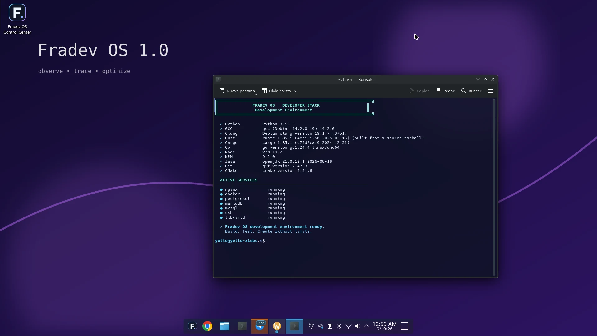
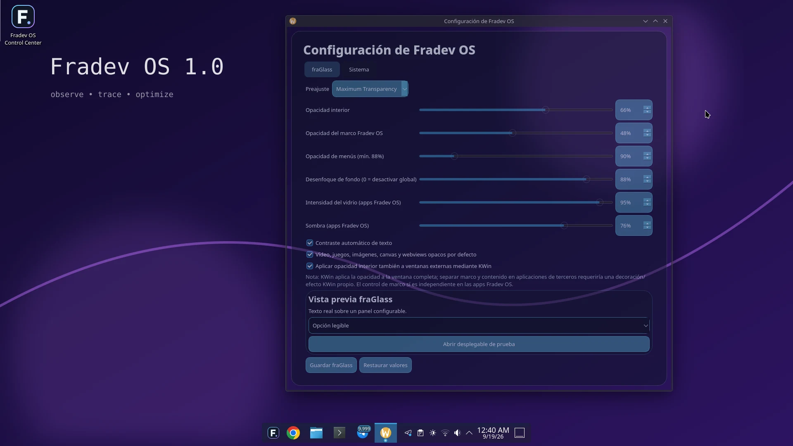
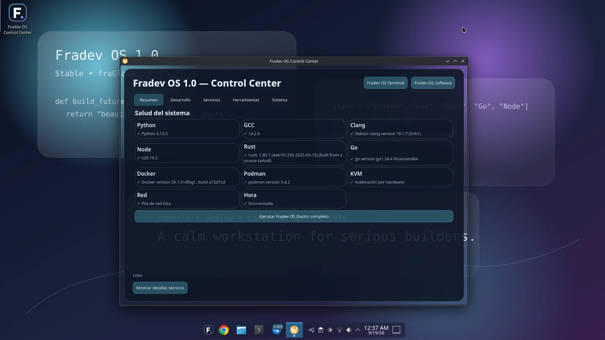
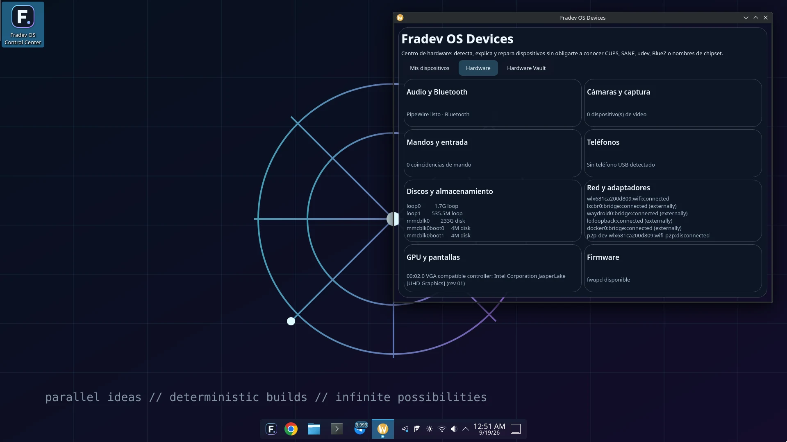
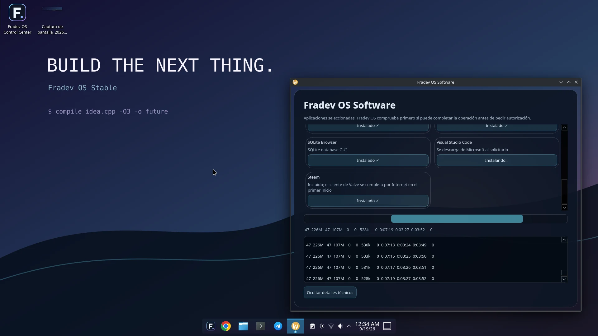

01
Crea desde el primer minuto
Herramientas de desarrollo, terminal, editores y utilidades preparadas para pasar de una idea a algo real.
Desarrolla. Crea. Juega. Conecta. Fradev OS reúne tus herramientas y tus posibilidades en un escritorio moderno, rápido de entender y listo para ir más lejos.
Fradev OS está pensado para que el sistema desaparezca cuando no lo necesitas y esté ahí cuando quieres control. Sin ruido innecesario. Sin perder potencia.
Herramientas de desarrollo, terminal, editores y utilidades preparadas para pasar de una idea a algo real.
Trabaja con aplicaciones nativas y amplía tus posibilidades con software de Windows, Android y juegos compatibles.
Impresoras, escáneres, teléfonos, Bluetooth, almacenamiento y más, con herramientas pensadas para resolver en lugar de complicar.
Fradev OS no quiere obligarte a elegir entre lo que ya usas y lo que quieres descubrir. Te da una base sólida y varias puertas para seguir trabajando a tu manera.
fraGlass le da a Fradev OS una presencia propia: transparencia, profundidad y contraste equilibrados para trabajar durante horas sin perder claridad.
Puedes ajustar la experiencia a tu gusto, desde un aspecto sólido y sobrio hasta un entorno mucho más translúcido.
Python, C/C++, Rust, Go, Java, Web, contenedores, bases de datos, virtualización y más. Todo pensado para que puedas empezar sencillo y profundizar cuando lo necesites.
fradevctl doctorComprueba herramientas clave, red, KVM y sincronización.fradevctl dev status fullMuestra qué perfiles están listos y qué componentes faltan.fradevos-update checkConsulta el estado de actualizaciones de Fradev OS.systemctl --failedUna vista rápida de servicios que requieren atención.Sin renders conceptuales: estas imágenes fueron tomadas directamente de Fradev OS 1.0 Stable funcionando en hardware real.





La descarga pública llegará próximamente. Cuando esté lista, este será el punto de entrada para obtener Fradev OS 1.0 Stable.